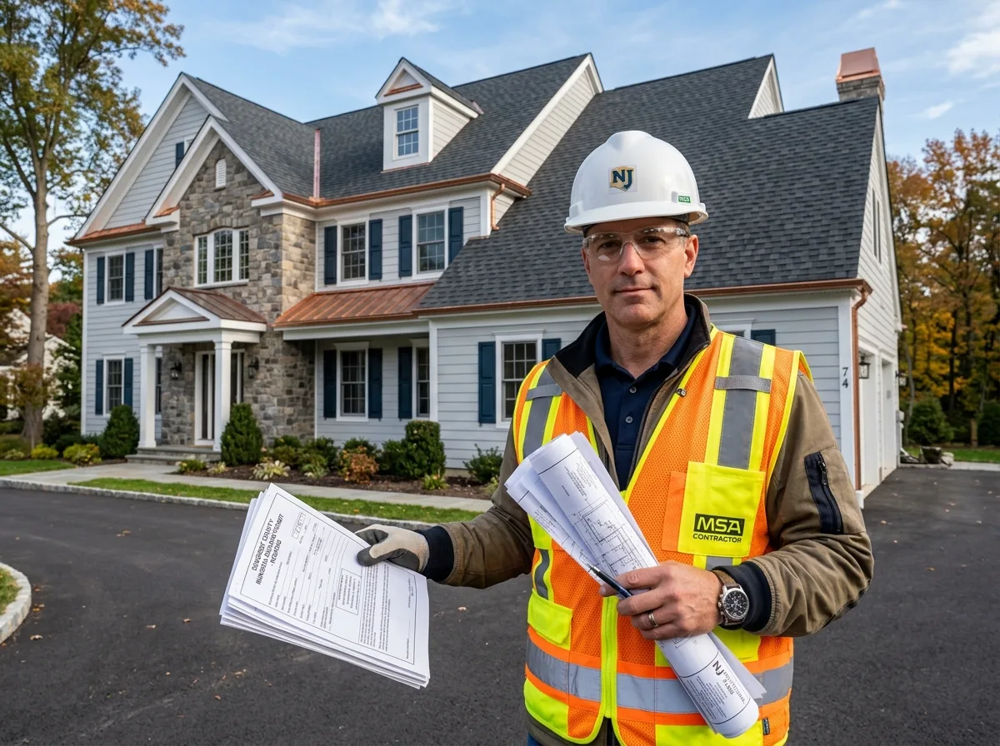

Tile Roofing Contractors & Tile Roofer in Bridgewater, NJ
Elevate your home with timeless architectural clay, concrete, and Spanish tile roofing from your certified local roofer in Bridgewater, NJ. Whether you are searching for experienced tile roofing contractors or a trusted tile roofer near me, Bridgewater Roofer delivers structural load engineering, custom copper valley fabrication, cracked tile replacement, and hurricane-rated tile anchoring engineered to last 75+ years.

Looking for the Last Roof Your Home Will Ever Need?
Schedule a personalized standing seam metal design consultation with our certified Bridgewater master craftsmen.
The Ultimate Roofing Investment for Somerset County Properties
While asphalt shingles remain popular for introductory budgets, they suffer from inherent limitations: granule loss, thermal brittleness, wind vulnerability, and a typical lifespan of 20 to 25 years in New Jersey's freeze-thaw climate.
Architectural standing seam tile roofing represents the gold standard of residential and commercial protection. Engineered with continuous vertical panels connected by raised, interlocking ribs, standing seam systems conceal all fasteners beneath the seams. Without exposed screws or vulnerable rubber washers to dry rot under the sun, water simply has no entry path.
At Bridgewater Roofer, our certified metal craftsmen custom-fabricate and double-lock every panel on-site. Combined with high-temperature self-adhering underlayments, custom copper valleys, and color-matched snow guards, our tile roofing systems deliver unmatched elegance and permanent peace of mind.

8 Common Roofing Frustrations Metal Permanently Solves
Say goodbye to repetitive repair cycles, storm worries, and recurring re-roofing investments:
Frequent Re-Roofing Every 15–20 Years
Conventional shingles degrade under UV rays and winter freezes. A standing seam metal roof lasts 50 to 70+ years—the last roof you'll buy.
Wind Blow-Offs on Exposed Ridges
High winds along the Watchung Mountains tear brittle shingle tabs. Interlocking standing seam panels withstand continuous 140+ MPH gusts.
Winter Ice Damming Along Eaves
Smooth metal panels shed heavy snowpacks effortlessly, preventing the dangerous thermal ice dams that force water under shingles.
Exposed Screw Gasket Degradation
Cheap corrugated metal roofs use exposed screws with rubber washers that dry rot in 7 years. Standing seam conceals all fasteners 100%.
High Summer Attic Temperatures & AC Strain
Dark shingles absorb 90% of solar heat. Reflective Kynar 500® metal finishes bounce solar radiation, dropping attic heat by up to 30°F.
Granule Loss & Downspout Clogging
Asphalt shingles lose mineral grit into gutters and drainage basins every storm. Solid metal panels shed zero mineral waste.
Unsightly Black Algae Streaks & Moss
Shaded northern slopes in Bridgewater develop thick moss that rots shingle binders. Metal surfaces prevent mold and algae attachment.
Hail Fractures & Impact Bruising
Severe thunderstorm hail cracks brittle shingle fiberglass mats. Heavy-gauge 24-gauge Galvalume achieves UL Class 4 severe hail impact resistance.
Natural & Synthetic tile roofing Anatomy
Explore the multi-layer components of a certified standing seam tile roofing system. Click key nodes on our 3D model below:
Double-Lock Standing Seam Rib Technology
Vertical panels are mechanically crimped together at 180° or 360° along raised 1.5-inch to 2-inch seams. All fasteners are concealed underneath floating thermal clips, allowing panels to expand and contract smoothly in extreme weather without buckling or pulling screws loose.
8 Reasons Homeowners Upgrade to tile roofing
Recognize when conventional asphalt shingles no longer make sense for your long-term property goals:
Facing Your Second Roof Replacement
Homeowners who replaced shingles 18 years ago and face another replacement realize metal costs significantly less over a 40-year horizon.
Living on Wind-Exposed Mountain Slopes
Homes along Watchung ridge in Martinsville experience constant wind shear. Standing seam provides 140+ MPH continuous wind resistance.
Recurring Severe Winter Ice Dams
Homes with low eave overhangs or complex gables suffer ice dams. Metal's slick surface and high heat conductivity shed snow effortlessly.
Planning to Install Rooftop Solar Panels
Standing seam metal allows solar panels to clamp directly onto seams without penetrating the roof deck, eliminating leak risks entirely.
Seeking Distinctive Architectural Curb Appeal
Modern farmhouses, classic colonials, and hillside contemporaries gain dramatic, high-end visual elegance from standing seam shadow lines.
High Summer Air Conditioning Utility Bills
Dark asphalt cooks attics up to 150°F. Energy Star reflective metal roofs bounce radiant heat, slashing summer cooling costs by up to 25%.
Desire for 100% Recyclable Sustainability
Asphalt shingles contribute 11 million tons of toxic waste to US landfills annually. Metal roofs are 100% recyclable at end of life.
Maximum Non-Combustible Fire Defense
Standing seam metal delivers a Class A non-combustible fire rating, protecting homes from wind-blown embers and lightning surges.
Engineered for Bridgewater Neighborhoods & Elevation Extremes
Somerset County architecture demands solutions that blend timeless curb appeal with extreme weather resilience. In the elevated ridges of Martinsville, homes face severe wind shear and intense snowfall that challenges asphalt shingle starter courses. In Bedminster, Basking Ridge, and equestrian estates, homeowners demand materials that match the stately dignity of classic Colonials and custom stone residences.
tile roofing is ideally suited for Central New Jersey. During brutal January freezes, smooth metal panels shed snow before heavy ice dams can form. During sweltering July heat waves, Kynar 500® pigments reflect infrared radiation to keep second-floor bedrooms significantly cooler.
We handle the entire process from custom CNC roll-forming to municipal building permit filings with the Bridgewater Township Code Enforcement office at 505 Route 202/206, ensuring 100% compliance with New Jersey Uniform Construction Code.
Our 8-Step tile roofing Protocol
Installing architectural metal requires master-level metal fabrication and precision engineering:
Laser Precision Measurement & Deck Audit
We measure every ridge, valley, and rake plane using 3D laser scanners to calculate custom panel lengths and verify deck flatness.
100% Tear-Off & High-Temp Shield
We strip old shingles down to wooden sheathing and lay self-adhering high-temperature underlayment rated to 250°F.
On-Site CNC Panel Roll-Forming
We roll-form continuous 24-gauge Galvalume steel panels on-site to exact eaves-to-ridge lengths, eliminating horizontal seams.
Concealed Floating Clip Installation
Stainless steel expansion cleats are fastened along panel edges, allowing unrestricted thermal movement without fastener fatigue.
Mechanical Double-Lock Seam Crimping
We mechanically crimp panel seams at 180° or 360°, creating an airtight, watertight structural bond with zero exposed screws.
Custom Copper & Wall Transition Bends
Valleys, headwalls, and chimney flashings are custom hand-bent and hemmed into locking cleats without relying on temporary caulk.
Ventilated Ridge Cap & Snow Guards
Continuous baffled metal ridge vents are integrated along peaks, accompanied by color-matched heavy snow rail retention bars.
Township Sign-Off & 50-Year Warranty
We coordinate final Bridgewater UCC municipal building inspections and issue your official 50-year non-prorated system warranty.
Full-Spectrum Architectural Metal Capabilities
From complete home standing seam conversions to custom copper accents and snow retention:
Architectural Standing Seam Roofs
Custom 24-gauge Galvalume steel standing seam systems with concealed clips, 140 MPH wind ratings, and 50+ year lifespans.
Standing Seam Details →Custom Copper Accents & Bay Windows
Hand-soldered 16-oz and 20-oz authentic copper installations for porticos, bay windows, turret roofs, and historic accents.
Copper Options →Commercial Metal Retrofit Systems
Engineered sub-framing and standing seam overlay solutions for commercial and industrial buildings with aging screw-down metal.
Commercial Metal →Snow Guard & Snow Rail Systems
Color-matched clamp-on snow retention rails that prevent dangerous rooftop snow and ice avalanches above doorways and walks.
Snow Rail Details →Porch & Accent Metal Roofs
Combining primary architectural shingles with distinctive standing seam metal porch and dormer accents for modern farmhouse curb appeal.
Accent Options →Custom Chimney Saddles & Metal Flashing
Custom hand-brake formed step and counter-flashing, back saddles, and crickets bent from heavy metal stock to stop leaks.
Flashing Details →Concealed Fastener Metal Wall Panels
Vertical and horizontal architectural metal siding panels for modern accent walls, commercial facades, and gable ends.
Wall Panels →Metal Roof Repair & Restoration
Precision seam tightening, replacement of deteriorated fasteners, and high-solids elastomeric coatings for aged metal roofs.
Metal Repair →tile roofing Systems & Custom Profiles We Install
Architectural standing seam, interlocking metal shingles, and copper accents engineered for 50+ year longevity in Central New Jersey:
Architectural Asphalt Shingles
The gold standard for Somerset County residential roofs. Architectural dimensional shingles feature multi-layered fiberglass construction, excellent wind resistance up to 130 mph, and rich shadow lines that elevate suburban curb appeal.
- Concealed stainless steel thermal expansion clips with zero exposed surface fasteners
- Double-folded mechanical vertical seams providing 150+ MPH hurricane wind resistance
- High-temperature self-adhering ice-and-water membrane across 100% of the roof plane

Natural & Synthetic Slate vs. Architectural Shingles
An objective lifecycle cost and performance analysis to help you make the right investment for your property:
GAF Timberline HDZ® Shingles
- ✔Lowest initial upfront capital expense.
- ✔Typical lifespan: 20 to 25 years in New Jersey climate.
- ✔130 MPH wind warranty with LayerLock™ technology.
- ✔Requires eventual replacement during long-term homeownership.
24-Gauge Mechanical Lock Metal
- ✔Higher initial investment, but lasts 50 to 70+ years.
- ✔Concealed expansion fasteners—zero exposed screws to leak.
- ✔140+ MPH wind rating and Class 4 hail impact resistance.
- ✔Cuts summer AC bills and increases home resale appraisal value.
8 Technical Factors That Determine tile roofing Costs
Every metal roof is custom-engineered and fabricated on-site. Here are the genuine technical variables that shape your written estimate:
Metal Substrate Material
24-gauge Galvalume steel offers maximum strength and value, while heavy architectural aluminum or natural copper represent premium luxury tiers.
Panel Seam Profile Type
Mechanically field-seamed double-lock panels require specialized on-site crimping equipment, whereas snap-lock systems install slightly faster.
Roof Pitch & Slope Complexity
Steep pitches (8/12 and higher) with multiple valleys, hips, dormers, and masonry intersections require custom hand-brake metal fabrication.
Tear-Off of Existing Shingle Layers
Complete tear-off down to bare wooden sheathing is necessary to install high-temperature underlayment and verify decking flatness.
High-Temperature Underlayment Tier
Metal surfaces reach high temperatures in summer. Installing premium self-adhering ice shields rated to 250°F is mandatory for durability.
Custom Copper & Wall Flashings
Integrating hand-soldered authentic copper valley pans, chimney saddles, and sidewall flashings influences craftsmanship labor hours.
Snow Guard Retention Engineering
Color-matched dual-pipe or pad-style snow retention systems engineered to prevent sudden snow avalanches above doorways and walks.
Bridgewater UCC Permitting Fees
Municipal permit filing fees with the Bridgewater Township Code Enforcement office based on calculated residential project valuation.
Bridgewater tile roofing Permitting & Code Compliance
Under the New Jersey Uniform Construction Code (UCC), complete residential and commercial metal roof installations require a municipal building permit issued by Bridgewater Township Code Enforcement (located at 505 Route 202/206).
Metal roofing installations must verify structural load capacities, wind uplift resistance under ASCE 7 (minimum 115 MPH design wind speed), and Class A fire classifications. Bridgewater Roofer prepares all engineering calculations, submits contractor documentation, pays municipal fees, and coordinates the final township inspection.

Recent tile roofing Projects in Somerset County
Explore authentic standing seam metal installations completed by our master metal artisans:
Hillside Contemporary Full Metal Conversion
Replaced wind-damaged 22-year-old asphalt shingles with custom on-site roll-formed 24-gauge Galvalume standing seam in Matte Charcoal. Installed high-temp underlayment, mechanical double-lock seams, and snow guard retention rails.
Colonial Standing Seam Porch & Bay Window Upgrade
Fabricated hand-soldered 16-oz natural copper bay window roofs combined with Dark Bronze standing seam metal over an expansive wraparound front porch, creating stunning visual curb appeal.
Interactive Before & After Metal Transformation
Drag the interactive slider handle to inspect our roof restoration process.
 After (Architectural Standing Seam)
After (Architectural Standing Seam)
 Before (Aged Asphalt Shingles)
Before (Aged Asphalt Shingles)
Why Somerset County Homeowners Choose Our Metal Roofs
We deliver master-level metal fabrication, certified field craftsmanship, and unwavering accountability:
Concealed Fastener Standard
We strictly install standing seam with concealed floating expansion clips. No exposed screws or rubber gaskets that dry rot and leak.
On-Site CNC Roll-Forming
We roll-form continuous full-length panels directly at your property, eliminating horizontal lap seams and ensuring a flawless custom fit.
Kynar 500® 30-Year Paint Warranty
Our panels feature genuine factory PVDF resin coatings that resist UV fading, chalking, and environmental soot for over three decades.
High-Temperature Underlayment
We install full-coverage self-adhering underlayments rated to 250°F, ensuring total secondary leak protection beneath the metal.
Zero Subcontractors
Every standing seam roof is installed by our own in-house factory-certified metal artisans who specialize exclusively in sheet metal.
50-Year Non-Prorated Warranty
Backed by transferable 50-year system warranties covering materials and certified installation workmanship for total investment security.
What Homeowners Say About Our tile roofing
Read verified feedback from Bridgewater and Somerset County property owners who upgraded to lifetime tile roofing systems:
Related Roofing Services
Explore other specialized solutions delivered by our Somerset County roofing crews:


tile roofing Across Bridgewater & Somerset County
Specialized tile roofing craftsmen installing standing seam and architectural metal profiles across Bridgewater and Central New Jersey:
Bridgewater, NJ
Suburban colonials, complex valleys & standing seam & architectural tile roofing across all township neighborhoods
Somerville, NJ
Historic Victorian roofs, steep pitch & expert standing seam & architectural tile roofing near downtown Somerville
Raritan, NJ
Residential asphalt shingle & flat roofing standing seam & architectural tile roofing along the Raritan corridor
Martinsville, NJ
High-wind ridge shingles & heavily shaded woodland standing seam & architectural tile roofing
Bound Brook, NJ
River valley weatherization, flashing seals & prompt standing seam & architectural tile roofing
Basking Ridge, NJ
Designer architectural shingles, shake conversions & premier standing seam & architectural tile roofing
Warren, NJ
Custom steep-slope estates, copper valleys & specialized standing seam & architectural tile roofing
Bedminster, NJ
Equestrian country estates, standing seam metal & complete standing seam & architectural tile roofing
Branchburg, NJ
Contemporary ranches, wind damage mitigation & full-service standing seam & architectural tile roofing
Hillsborough, NJ
Expansive suburban developments, ridge vent alignments & high-speed standing seam & architectural tile roofing
Manville, NJ
Classic single-family bungalows, porch roofs & dependable standing seam & architectural tile roofing
tile roofing FAQs
Straightforward answers to questions homeowners ask when considering tile roofing in Bridgewater:
Is a metal roof noisy when it rains?
No. This is a common myth based on open-frame metal barns without ceilings. Residential standing seam metal roofs are installed over solid 5/8-inch plywood decking, covered by a dense high-temperature sound-deadening underlayment, and backed by attic insulation. Rain on a residential metal roof sounds identical to rain on an asphalt shingle roof.
Will a metal roof attract lightning?
No. Metal conducts electricity, but it does not attract lightning. Lightning strikes the tallest geographic object in a vicinity (trees, antennas, ridges). In fact, because metal is a Class A non-combustible material, if lightning does strike, a metal roof safely dissipates the electrical energy without igniting into a fire like wooden or asphalt materials can.
What is the difference between standing seam and corrugated screw-down metal?
Standing seam metal features raised interlocking vertical seams with concealed expansion fasteners hidden entirely underneath. There are zero exposed screws. Corrugated or screw-down metal has thousands of exposed screws driven through the face of the panels with neoprene rubber washers that dry rot, crack, and leak within 7 to 10 years. We exclusively install commercial-grade standing seam for residential homes.
How long does a standing seam metal roof actually last in New Jersey?
A properly installed 24-gauge Galvalume or aluminum standing seam metal roof lasts between 50 and 70+ years. With factory Kynar 500® resin coatings, the color and finish are warranted against peeling, chalking, and fading for 30 to 35 years. Most homeowners never need to replace a roof again.
How does metal perform in severe hail and high winds?
Standing seam metal delivers the highest impact rating available: UL 2218 Class 4. Heavy hail stones will not fracture the panels. Furthermore, our double-lock mechanical seams achieve a UL 580 Class 90 wind uplift rating, withstanding continuous winds exceeding 140 MPH without blowing off.
Can you walk on a standing seam metal roof?
Yes. Heavy 24-gauge Galvalume steel installed over solid wooden decking easily supports foot traffic. We recommend wearing clean, soft-soled rubber work boots and stepping between the raised seams to maintain traction and prevent scuffing the finish.
Do I need snow guards on a metal roof in Bridgewater?
Yes, we strongly recommend snow guards on roof slopes above walkways, driveways, decks, and entry doors. Because metal is exceptionally slick, accumulated snowpacks can suddenly slide off in a dangerous avalanche. Color-matched clamp-on snow rails hold the snow in place until it melts gradually.
Will a metal roof save money on energy costs?
Yes. Standing seam metal roofs with Energy Star cool roof pigments reflect up to 70% of solar radiation back into the atmosphere, unlike asphalt which absorbs heat. This lowers attic temperatures by up to 30°F, reducing air conditioning electricity consumption by 15% to 25% during hot Somerset County summers.
Can solar panels be installed on a standing seam metal roof?
Standing seam metal is the best possible roof for solar. Solar racking clamps directly onto the raised standing seams using specialized S-5! clamps without drilling a single penetration hole through the roof deck. Your roof warranty remains 100% intact, and because the metal lasts 50+ years, you won't need to detach the solar array to re-roof.
Does tile roofing require a building permit in Bridgewater?
Yes. Complete residential re-roofing requires a building permit from the Bridgewater Township Code Enforcement office at 505 Route 202/206 under the New Jersey Uniform Construction Code. Bridgewater Roofer prepares all engineering calculations, submits drawings, and coordinates official township inspections.
Helpful tile roofing Guides
Learn more about tile roofing performance, material choices, and ROI:
Asphalt Shingles vs. tile roofing
Detailed performance, aesthetic, and financial comparison for New Jersey homeowners.
Read Comparison Guide →
How Long Does a Roof Last in New Jersey?
Lifespan expectations for architectural shingles, standing seam metal, and commercial membranes.
Read Lifespan Guide →
Roof Replacement Cost in Bridgewater, NJ
Complete breakdown of factors determining residential roofing investments in Somerset County.
Read Cost Guide →Considering Natural & Synthetic Slate for Your Home?
Speak directly with our specialized standing seam tile roofing craftsmen. Get clear answers on profiles, colors, thermal efficiency, and receive a transparent on-site project estimate.